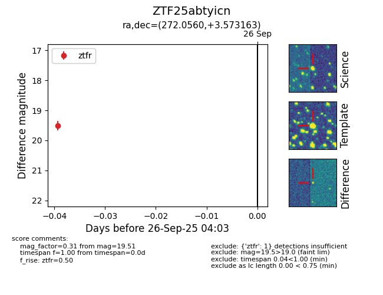

FINK: ZTF25abtyicn
Lasair: ZTF25abtyicn
ALeRCE: ZTF25abtyicn
ZTF25abtyicn (ztf,fink)
equatorial (ra, dec) = (272.0560,+3.57316)
galactic (l, b) = (31.1887,+11.23970)

last ztfr=19.51
1 ztfr detections